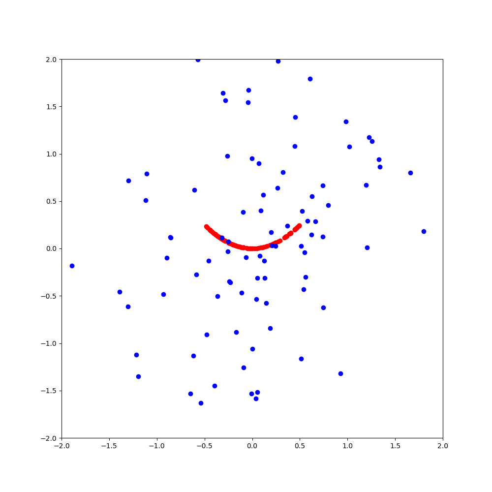

Reproducability
This article describes the design of a simple, 1-dimensional GAN:
How to Develop a 1D Generative Adversarial Network From Scratch in Keras
https://machinelearningmastery.com/how-to-develop-a-generative-adversarial-network-for-a-1-dimensional-function-from-scratch-in-keras/
The real samples are basically represented by pairs of values that lie on a parabola

Environment:
the x-values for the real samples are random.
Observations:
Train GAN on computer A with original code, save model to M1.h5, predictions:
0 1 pred
0 0.2 0.00 0.813885
1 0.2 0.01 0.822533
2 0.2 0.02 0.830599
3 0.2 0.03 0.836829
4 0.2 0.04 0.842578
5 0.2 0.05 0.848162
6 0.2 0.06 0.848473
7 0.2 0.07 0.841271
8 0.2 0.08 0.833794
9 0.2 0.09 0.826038
copy model M1.h5 to computer B and load it, predictions:
0 1 pred
0 0.2 0.00 0.813885
1 0.2 0.01 0.822533
2 0.2 0.02 0.830599
3 0.2 0.03 0.836829
4 0.2 0.04 0.842578
5 0.2 0.05 0.848162
6 0.2 0.06 0.848473
7 0.2 0.07 0.841271
8 0.2 0.08 0.833794
9 0.2 0.09 0.826038
So the predictions are the same on different computers when the saved model is the same.
New Training run of GAN on computer A with original code, save model to M2.h5, predictions:
0 1 pred
0 0.2 0.00 0.784457
1 0.2 0.01 0.792328
2 0.2 0.02 0.796565
3 0.2 0.03 0.799720
4 0.2 0.04 0.802838
5 0.2 0.05 0.803929
6 0.2 0.06 0.800718
7 0.2 0.07 0.797405
8 0.2 0.08 0.794052
9 0.2 0.09 0.790657
Loading model M2.h5 on computer B gives the same predictions as on computer A:
0 1 pred
0 0.2 0.00 0.784457
1 0.2 0.01 0.792328
2 0.2 0.02 0.796565
3 0.2 0.03 0.799720
4 0.2 0.04 0.802838
5 0.2 0.05 0.803929
6 0.2 0.06 0.800718
7 0.2 0.07 0.797406
8 0.2 0.08 0.794052
9 0.2 0.09 0.790657
Between training runs, the predictions are different.
Convergence Behavior
During training, real samples prediction accuracy starts low and fake samples prediction accuracy starts
high.
At around epoch 400, the real prediction accuracy becomes a steady 1.00 and the fake prediction hovers around
0.9
epoch 0 acc_real 0.016 acc_fake 0.938
..
epoch 400 acc_real 1.000 acc_fake 0.844
..
epoch 993 acc_real 1.000 acc_fake 0.891
epoch 994 acc_real 1.000 acc_fake 0.844
epoch 995 acc_real 1.000 acc_fake 0.859
epoch 996 acc_real 1.000 acc_fake 0.781
epoch 997 acc_real 1.000 acc_fake 0.875
epoch 998 acc_real 1.000 acc_fake 0.906
epoch 999 acc_real 1.000 acc_fake 0.859
non-random x-values
In the code for generate_real_samples(), the x-values are random.
What happens if we use the same x-values in this function?